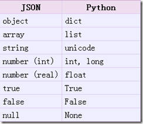
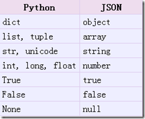

json文件存储
JSON(JavaScript Object Notation) 是一种轻量级的数据交换格式，它使得人们很容易的进行阅读和编写。同时也方便了机器进行解析和生成。适用于进行数据交互的场景，比如网站前台与后台之间的数据交互。
JSON和XML的比较可谓不相上下。
Python 2.7中自带了JSON模块，直接import json就可以使用了。
官方文档：http://docs.python.org/library/json.html
Json在线解析网站：http://www.json.cn/
json模块提供了四个功能：dumps、dump、loads、load，用于字符串 和 python数据类型间进行转换。
1. json.loads()
把Json格式字符串解码转换成Python对象 从json到python的类型转化对照如下：
# json_loads.py
import json
strList = '[1, 2, 3, 4]'
strDict = '{"city": "北京", "name": "张三"}'
json.loads(strList)
# [1, 2, 3, 4]
json.loads(strDict)
# {'city': '北京', 'name': '张三'}
2. json.dumps()
实现python类型转化为json字符串，返回一个str对象 把一个Python对象编码转换成Json字符串
从python原始类型向json类型的转化对照如下

# json_dumps.py
import json
import chardet
listStr = [1, 2, 3, 4]
tupleStr = (1, 2, 3, 4)
dictStr = {'city': '北京', 'name': '张三'}
json.dumps(listStr)
# '[1, 2, 3, 4]'
json.dumps(tupleStr)
# '[1, 2, 3, 4]'
# 注意：json.dumps() 序列化时默认使用的ascii编码
# 添加参数 ensure_ascii=False 禁用ascii编码，按utf-8编码
# chardet.detect()返回字典, 其中confidence是检测精确度
json.dumps(dictStr)
# '{"city": "\\u5317\\u4eac", "name": "\\u5f20\\u4e09"}' #json数据自动按Unicode存储
print(json.dumps(dictStr, ensure_ascii=False))
# {"city": "北京", "name": "张三"}
3. json.dump()
将Python内置类型序列化为json对象后写入文件
# json_dump.py
import json
listStr = [{"city": "北京"}, {"name": "张三"}]
with open('liststr.json','w',encoding='utf-8-sig') as f:
json.dump(listStr,f,ensure_ascii=False)
dictStr = {"city": "北京", "name": "张三"}
with open('dictstr.json','w',encoding='utf-8-sig') as f:
json.dump(dictStr,f, ensure_ascii=False)
4. json.load()
读取文件中json形式的字符串元素 转化成python类型
# json_load.py
import json
strList = json.load(open("liststr.json",encoding='utf-8-sig'))
print(strList)
strDict = json.load(open("dictstr.json",encoding='utf-8-sig'))
print(strDict)